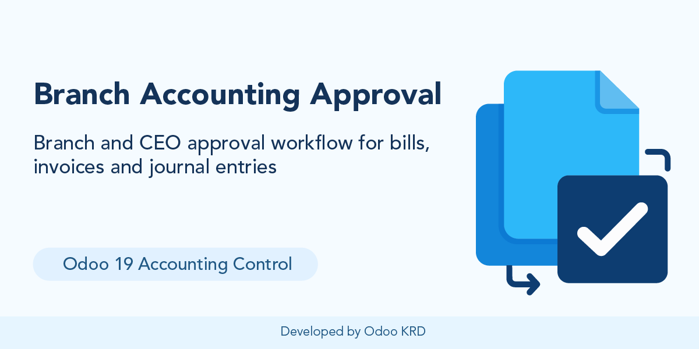
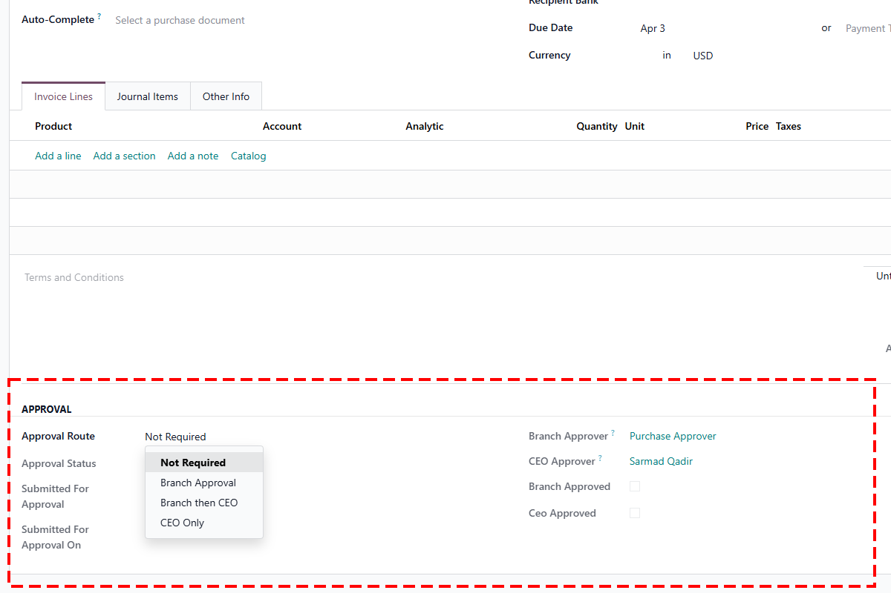
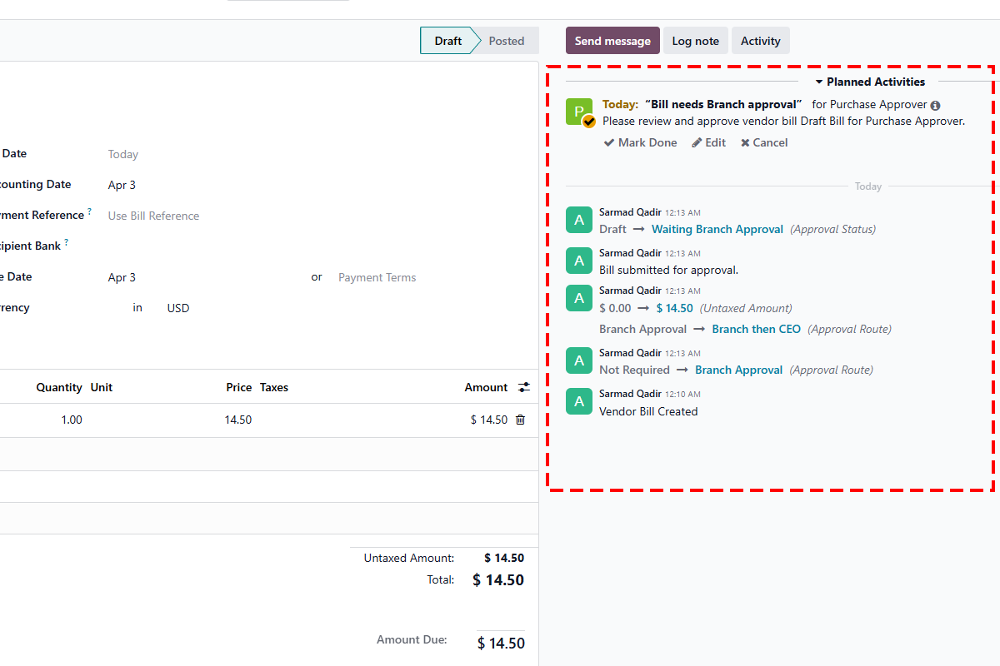
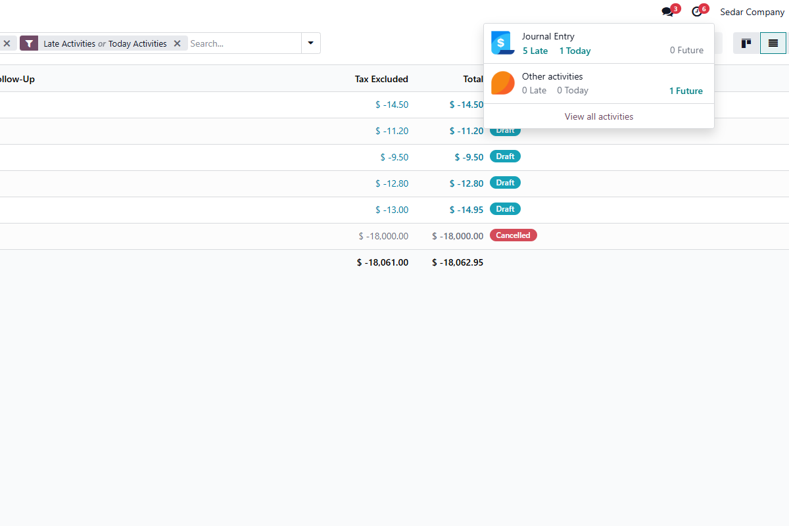

Branch Accounting Approval
Professional Auditor, Branch, CEO, and final Auditor approval routing for vendor bills, vendor credit notes, customer invoices, customer credit notes, and journal entries in Odoo 19.
Overview
This module adds a structured approval workflow for accounting documents in Odoo 19. Users can select an approval route directly on vendor bills, vendor credit notes, customer invoices, customer credit notes, and journal entries, and the system manages the correct Auditor, Branch, and CEO approval flow automatically.
It is designed to strengthen internal financial controls while keeping the process clear, traceable, and easy to use. Draft documents can use Auditor Only approval, and posted bills, credit notes, invoices, and manual journal entries that use Branch/CEO routes can be routed to a configured Auditor User for final review.
Approval Routes
Auditor Only
Documents are sent directly to the Auditor User before posting.
Not Required
Restricted bypass route for approval admins and accounting managers.
Branch Only
Documents require approval from the Branch Approver only.
Branch then CEO
Documents must be approved by Branch first, then by CEO.
CEO Only
Documents are sent directly to the CEO Approver.
Auditor Final Review
Posted bills, credit notes, invoices, and manual journal entries that use Branch/CEO routes are forwarded to the configured Auditor User for final approval.
Main Features
- Approval route selection on bills, invoices, and journal entries
- Auditor-only, Branch-only, CEO-only, and Branch-then-CEO routing
- Final Auditor approval for posted bills, credit notes, invoices, and manual journal entries using Branch/CEO routes
- Posting blocked until the selected approval route is complete
- Automatic activities for approvers, auditors, and ready-to-post notifications for submitters
- Creator/submitter visibility for their own pending documents
- CEO-pending visibility protection from branch approvers where required
- Rejection with mandatory reason and reset support
- Auditor rejection reason/recommendation with correction and resubmission flow
- Approval badges, ribbons, search filters, group-bys, and chatter audit trail
- Workflow-field tamper protection, approver snapshots, and edit lock after approval
How It Works
- Create a vendor bill, vendor credit note, customer invoice, customer credit note, or journal entry
- Select the approval route
- Submit the document for approval
- Assigned Branch, CEO, or Auditor approver reviews the document
- Approver approves or rejects
- Once approved, the submitter is notified that the document is ready to post
- Posted bills, credit notes, invoices, and manual journal entries using Branch/CEO routes are forwarded to the Auditor User for final approval
- If rejected by the Auditor, the document keeps the recommendation for correction and resubmission
Configuration
Configure the following company-level approvers:
- Branch Approver
- CEO Approver
- Auditor User
The system snapshots these users on the accounting document when it is submitted, then uses the snapshot according to the selected approval route and the final posted-document audit stage.
Screenshots
Company Accounting Approval configuration

Approval section on accounting documents

Submit for approval button

Chatter and approval information

Notifications and activities

Approve and reject actions

Dependencies
This module depends on the following Odoo apps:
- Accounting (`account`)
- Discuss / Activities (`mail`)